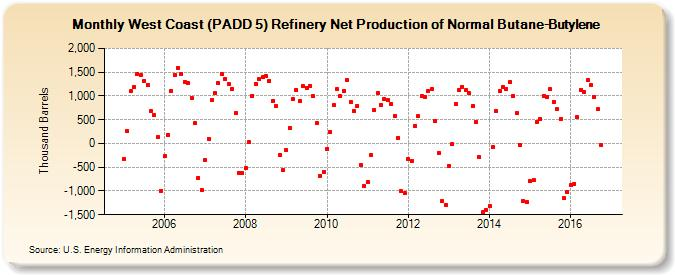

|
Download Data (XLS File) |
|
||||||||
|  | ||||||||
| West Coast (PADD 5) Refinery Net Production of Normal Butane-Butylene (Thousand Barrels) | ||||||||
| Year | Jan | Feb | Mar | Apr | May | Jun | Jul | Aug | Sep | Oct | Nov | Dec |
|---|---|---|---|---|---|---|---|---|---|---|---|---|
| 2005 | -330 | 255 | 1,093 | 1,183 | 1,471 | 1,433 | 1,320 | 1,240 | 677 | 591 | 134 | -991 |
| 2006 | -274 | 187 | 1,113 | 1,443 | 1,597 | 1,458 | 1,294 | 1,280 | 958 | 429 | -717 | -979 |
| 2007 | -356 | 99 | 913 | 1,057 | 1,269 | 1,452 | 1,356 | 1,254 | 1,148 | 645 | -612 | -620 |
| 2008 | -509 | 27 | 1,005 | 1,252 | 1,347 | 1,394 | 1,427 | 1,313 | 898 | 782 | -245 | -569 |
| 2009 | -141 | 335 | 929 | 1,132 | 887 | 1,202 | 1,171 | 1,215 | 990 | 430 | -676 | -592 |
| 2010 | -108 | 238 | 799 | 1,139 | 989 | 1,105 | 1,325 | 877 | 688 | 789 | -452 | -906 |
| 2011 | -821 | -235 | 699 | 1,065 | 810 | 937 | 910 | 840 | 576 | 124 | -1,009 | -1,052 |
| 2012 | -337 | -366 | 375 | 569 | 997 | 984 | 1,104 | 1,150 | 482 | -193 | -1,215 | -1,292 |
| 2013 | -467 | -19 | 820 | 1,117 | 1,198 | 1,124 | 1,059 | 783 | 451 | -295 | -1,449 | -1,398 |
| 2014 | -1,318 | -72 | 677 | 1,102 | 1,198 | 1,154 | 1,289 | 999 | 635 | -34 | -1,208 | -1,233 |
| 2015 | -798 | -777 | 452 | 504 | 998 | 971 | 1,139 | 880 | 719 | 510 | -1,155 | -1,027 |
| 2016 | -880 | -846 | 547 | 1,122 | 1,078 | 1,325 | 1,223 | 973 | 717 | -31 | -1,327 | |
| - = No Data Reported; -- = Not Applicable; NA = Not Available; W = Withheld to avoid disclosure of individual company data. |
| Release Date: 1/31/2017 |
| Next Release Date: 2/28/2017 |